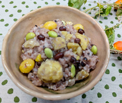

秋の3種実りごはん
- 調理時間：90分
- （一人当たり）
- カロリー：361kcal
- たんぱく質：7.0g
- 脂質：1.4g
- 炭水化物：77.2g
- 塩分：0.8g


＜3合分＞
- うるち米
- 1.5合
- もち米
- 1.5合
- 水
- 米の1.2倍量(650ml)
- 小豆(ドライパック)
- 50g
- 栗
- 200g
- ギンナン(ゆで)
- 1パック
(40g位) - 塩
- 小さじ1～2
- 枝豆（冷凍）
- お好みで


- 米は洗ってザルにあげ、しっかり水を切る。
※ザルを斜めに傾けるとしっかり水がきれます。 - 炊飯器の内釜に米、分量の水を入れて30分ほど浸水させる。
- 栗の皮を包丁でむく。
※皮の鬼皮がかたくてむきにくい場合は、熱湯に数分つけて、やわらかくしてからむくとよい。 - むいた栗はアクをおさえるために水につける。
- 鍋にたっぷりのお湯を沸かし、栗を1～2分、下茹でする。
- ②の内釜に塩をいれて軽く混ぜ、栗、小豆、ギンナンを入れて、通常の白米と同様に炊く。
炊き上がれば、お好みで鞘から取り除いた枝豆を混ぜ合わせて完成。
秋の3種実りごはん
秋に旬をむかえる実りの３種。小豆は利尿作用と解毒作用があり、むくみ解消に有効です。栗は薬膳では腎機能を高める木の実だとされ、主に胃腸や腎の力を高めます。ギンナンはイチョウの実で肺のはたらきを助けると言われます。
令和の米騒動ともいわれた今年の米不足。食に不安のある時代に主食となる新米が何よりのご馳走です。